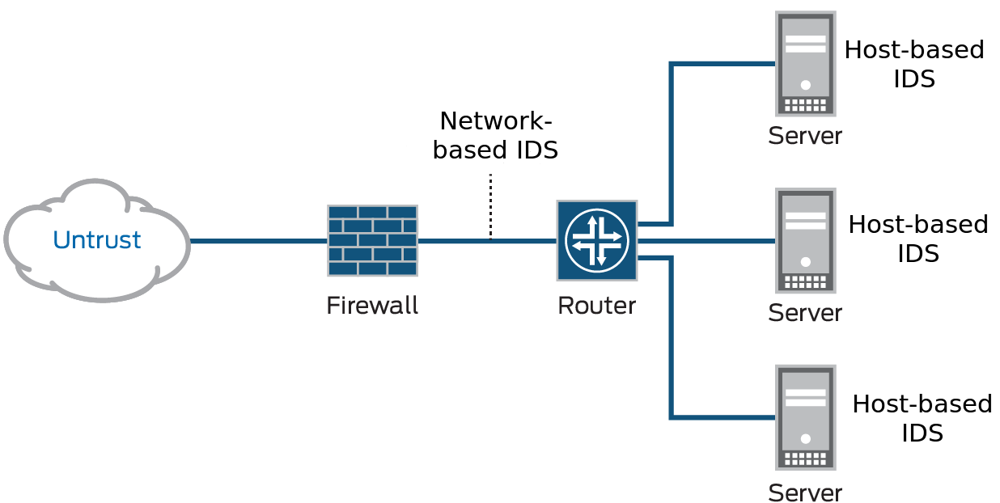

Introduction¶
What is IDS?¶
An intrusion detection system (IDS) monitors network traffic and monitors for suspicious activity and alerts the system or network administrator. In some cases, the IDS may also respond to anomalous or malicious traffic by taking action such as blocking the user or source IP address from accessing the network.
IDS come in a variety of “flavors” and approach the goal of detecting suspicious traffic in different ways. There are network based (NIDS) and host-based (HIDS) intrusion detection systems. There are IDS that detect based on looking for specific signatures of known threats- similar to the way antivirus software typically detects and protects against malware- and there are IDS that detect based on comparing traffic patterns against a baseline and looking for anomalies. There are IDS that simply monitor and alert and there are IDS that perform an action or actions in response to a detected threat.
A typical computer network has several access points to other networks, both public and private. The challenge is maintaining the security of these networks while keeping them open to their customers. Currently, attacks are so sophisticated that they can thwart the best security systems, especially those that still operate under the assumption that networks can be secured by encryption or firewalls. Unfortunately, those technologies alone are not sufficient to counter today’s attacks.
What Can You Do with IDS?¶
Intrusion detection systems (IDS) constantly watch your network, identifying possible incidents and logging information about them, stopping the incidents, and reporting them to security administrators. In addition, some networks use IDS for identifying problems with security policies and deterring individuals from violating security policies. IDS/IPS have become a necessary addition to the security infrastructure of most organizations, precisely because they can stop attackers while they are gathering information about your network.
How Does IDS Work?¶
The three IDS detection methodologies are typically used to detect incidents.
- Signature-Based Detection compares signatures against observed events to identify possible incidents. This is the simplest detection method because it compares only the current unit of activity (such as a packet or a log entry, to a list of signatures) using string comparison operations.
- Anomaly-Based Detection compares definitions of what is considered normal activity with observed events in order to identify significant deviations. This detection method can be very effective at spotting previously unknown threats.
- Stateful Protocol Analysis compares predetermined profiles of generally accepted definitions for benign protocol activity for each protocol state against observed events in order to identify deviations.
EniWARE Implementation¶
EniWARE uses its ??????????? for intrusion detection services. You can selectively enforce various attack detection and prevention techniques on the network traffic passing through your chosen ???? device. You can define policy rules to match a section of traffic based on a zone, a network, or an application, and then take active or passive preventative actions on that traffic.